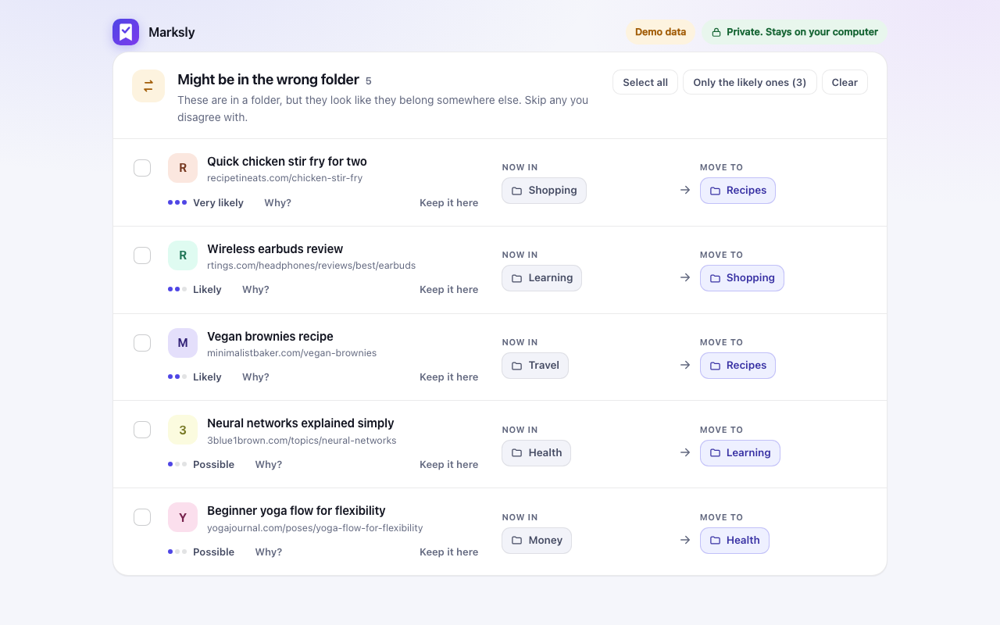
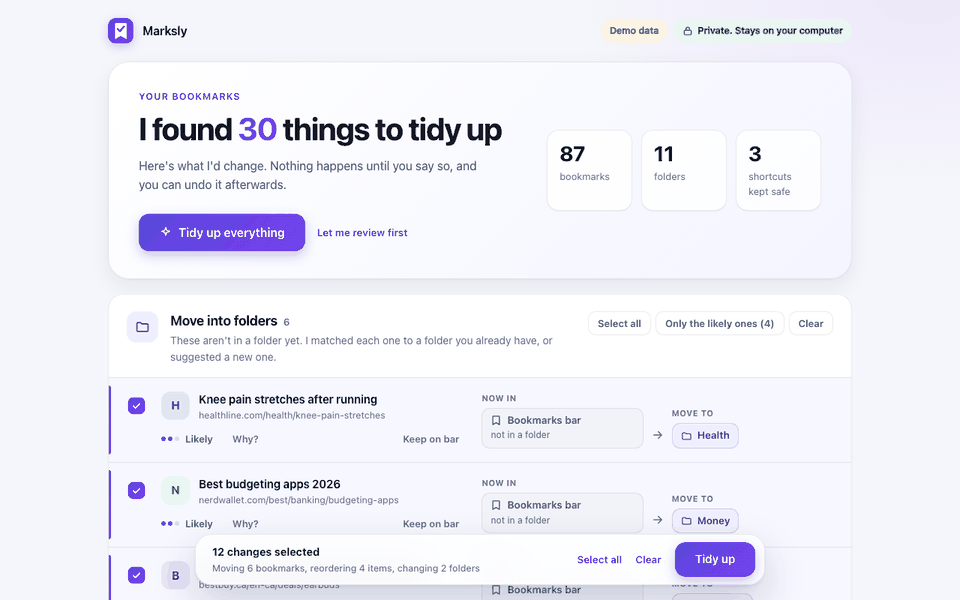

The problem
People save hundreds of bookmarks, never reorganize them, and file many in the wrong folder in a hurry. Rule-based tools sort by website, which cannot tell that a mortgage article belongs with finance when no word is shared. Tools that use a large language model solve that by sending your bookmarks to a server, and many need an API key.
I wanted the semantic part without the upload: a model small enough to ship inside the extension and run offline.

Approach
- A static embedding model, not a transformer. Each word has a fixed vector and a bookmark's meaning is the average of its words. That is why it fits: about 8 MB after int8 quantization, no GPU, and it plans a library of 3,300 bookmarks in 120 folders in about 1.4 seconds in the browser.
- Describe each folder three ways: the average meaning of its bookmarks, its two closest bookmarks, and its name. A bookmark is flagged only when another folder fits clearly better than its own.
- A gap the folder's own members never reach. The threshold for "clearly better" is learned per folder from its members, so a loose, mixed folder does not flag everything and a tight one catches real outliers.
- Preview, then act. Nothing changes until the user confirms, and the whole run, including merged and deleted folders and every position in a list, can be undone.
Evidence
I measured against misfiles I planted on purpose in two invented libraries. The second library was written after the thresholds were tuned on the first, to check that the tuning had not just memorized one dataset.
| Library | Keyword matching | With the model | Wrong flags | Loose bookmarks placed |
|---|---|---|---|---|
| A (thresholds tuned on it) | 0 of 14 | 11 of 14 | 1 | 11 of 12 right, 0 wrong |
| B (written afterwards) | 0 of 8 | 7 of 8 | 0 | 6 of 6 right |
The one wrong flag in library A is a known case I kept in the test suite on purpose, and the next section explains it. Planting errors beats eyeballing results: it gives a denominator, and it is the only reason I could see when a change made things worse.
Engineering notes
The JavaScript tokenizer matches the Python reference
I converted the model with a script and re-implemented its tokenizer (normalization, punctuation splitting, WordPiece) in JavaScript. I did not trust it by eye: on 24 samples the token output is identical to the Python reference, and embedding cosine similarity is at least 0.998 after quantization. Both checks are tests.
False positives were the real work
The first versions flagged bookmarks just because two folders shared a website (an intranet host, a ticketing portal). The fixes: a website that appears in several folders is treated as a platform and left out of the compared text, generic path words are ignored, and a suggestion has to share at least two content words with the target. Regression tests use fictional data so the lesson stays in the suite.
Privacy is enforced, not promised
The extension asks for bookmarks and storage only. A test fails if any file other than the model loader uses fetch or any network API, and the loader refuses a different origin. Browsing history is an optional permission, requested only if the user presses a button.
Undo has a quirk
Inside one folder Chrome reads a move's index as a position in the list before the move, so restoring an item downward needs one more. I mimicked that rule in the test double, and confirmed the test fails if I remove the adjustment, before trusting it.
Don't guess from missing data
"Put what you use most at the top" and "Archive" use the last-opened date Chrome keeps per bookmark. Where that date is missing it could mean "never opened" or "not tracked", so the Archive suggestion switches itself off unless enough bookmarks carry a date.
What went wrong first
- I told the user a model probe had matched a product name to the right folder in every model. It had not. I re-measured, found the model did not know that product, and corrected the claim. The case is still in the test suite.
- A line I added to reload the model ran after every apply, undo and setting change instead of once at startup. A test now guards it.
- A "most used on the bar" feature I proposed was not what was asked for. I dropped it and rebuilt around "top of each folder".
Limits
- The two libraries are invented. This is not a benchmark on real bookmark collections, and I make no accuracy claim for yours.
- The model knows everyday topics. It has not heard of newer or very specific products, so it reads "Copilot Studio" as "GitHub Copilot". Fixing that takes a large language model, which would mean sending bookmarks to a server. I chose not to.
- Folders with fewer than four bookmarks cannot be judged.
- Chrome has no hidden bookmarks; "Archive" is just off the bar.
